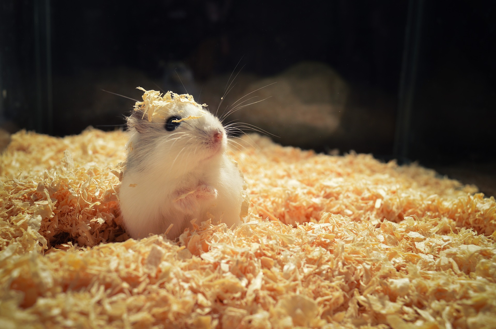

Top 2 Hamster Wheels
21/08/21

Here's our top 10 picks for hamster wheels.
We tried them all out and made sure they were safe for our little buddies.
Number 1 - Suncoast Wodent Hamster Wheel
"The Suncoast Sugar Glider features an 11-inch diameter. The unit prioritizes the safety of your pet
by featuring a “tail
guard”—a protective infrastructure that is designed to keep your pet’s tail, fur, and feet from
snagging.
The wheel is also made to be silent and comes with an axel that has been pre-oiled for efficiency.
It’s also
impressively durable and should stand up well to chewing. The metal base is virtually guaranteed to
withstand normal
use.
Finally, the unit can be mounted to the interior of your cage via attachment wiring.
You will want to note that the fixtures that keep your pet’s tail from getting snagged also make the
wheel very
challenging to clean.
All in all, we think this is the best hamster wheel of 2021. (Petkeen, Best Hamster Wheels 2021)"
Number 2 - Exotic Nutrition Silent Runner Hamster Wheel
"The Exotic Nutrition features a unique, axel-free design that ensures a completely silent
operation. And, because there
is no axel, this means there is also nothing for your pet to get its tail tangled up in. It is
further secured by a
plastic “privacy plate” that keeps your hamster securely tucked into the wheel.
The tracks have been made with “slip-proof” material to ensure that your pet has firm footing and
the stand is made of a
heavy-duty metal that ensures longevity.
Unfortunately, the privacy plate does also make the wheel slightly more difficult to clean. The
wheel can disassemble
for easier maintenance, but this will, of course, add time to the overall process.
It’s also one of the most expensive options on our list. Still, if you have some money to spend on
this purchase, it
will be well worth the investment. (Petkeen, Best Hamster Wheels 2021)"